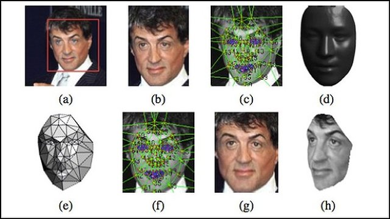

This is the another post of the series: How to build your own algotrading platform.
Machine learning and trading is a very interesting subject. It is also a subject where you can spend tons of time writing code and reading papers and then a kid can beat you while playing Mario Kart.
In the nexts posts, we are going to talk about:
- Optimize entries and exits. This and only this could make a ton of difference in your bank roll.
- Calculate position size (in case you don't like Kelly's critirion)
- Find possible correlation between different pairs (pair trading). I love the EURUSD vs GBPJPY correlation!
- Calculate support & resistance lines
But what is Machine Learning?
 (image from fastcompany)
Machine learning algorithms are algorithms where a machine can identify patterns in your data. Yeap, it is that simple. For example, find all the animals in this photo and draw a box around them. Also, name that animal. Crazy I know. For trading as you can imagine it is pretty similar:
"Find how can I make money based on this chart and do all the trades.
Then wash my underwear and don't mix the colored with the whites"
In order for a machine to "learn", you need to teach it what is right or wrong (supervised learning) or give it a big dataset and let it got wild (unsupervised). For identifying objects this is straight-forward but what about trading?
Playing with data
I looked around to see if there is any machine learning program that can identify S/R lines but to no avail. So I decided to write the first machine learning program in python that identifies support and resistance lines in Python. Another first! Hooray!
But how can an algorithm identify these areas? Hoooooow? Ladies and gents (and robots), let me introduce you to MeanShift, an unsupervised algorithm that is used mostly for image recognition and is pretty trivial to setup and run (but also very slow).
The idea is that this algorithm will let me partition my data (forex ticks) into areas and then I can use the "edges" as support and resistance lines. Cool idea but does it work?
Spoiler: It works.
We analyse around 12 million datapoints of EURUSD in 2014 and a couple of months of 2015. The resistance lines are placed automagically by a machine learning algorithm.
What is really cool (and spooky) is that the algorithm pretty much nails it. NAILS it hard. It gets really spooky when we are going to use the algorithm to identify micro-structures and start scalping.
The system is able to process any kind of timeseries data (stocks, forex, gold, whatever) and it will render an html interactive chart (like the chart above) with your data and the machine generated S/L. The code is here so go crazy.
Now let's step through the code. After you have your set of data you need to read them and clean them. Prepare for some pandas magic.
# read csv files with daily data per tick
df = pandas.read_csv(filename, parse_dates=[0], index_col=0, names=['Date_Time', 'Buy', 'Sell'],
date_parser=lambda x: pandas.to_datetime(x, format="%d/%m/%y %H:%M:%S"))
# group by day and drop NA values (usually weekends)
grouped_data = df.dropna()
ticks_data = grouped_data['Sell'].resample('24H').ohlc()
We drop the empty values (weekends) and then we resample the data to 24 hours candlesticks (ohcl). This makes it MUCH easier to plot. The grouped_data are the data that we will feed into the ml algorithm.
Then we prepare the data that we are going to use in the algo.
# use 'ask'
sell_data = grouped_data.as_matrix(columns=['Sell'])
# calculate bandwidth (expirement with quantile and samples)
bandwidth = estimate_bandwidth(sell_data, quantile=0.1, n_samples=12000000)
ms = MeanShift(bandwidth=bandwidth, bin_seeding=True)
# fit the data
ms.fit(sell_data)
On the next post, we'll discuss how to make this work even better, discuss some very interesting results (can the algorithm actually predict about the future?) and start using it in our own trading. If you want to check the next article and read more about trading and investing using algorithms, signup to the newsletter.
Coming up next: Machine Learning Gone Wild - Using the code!
If you have more feedback, ping me at jonromero or signup to the newsletter.
Legal outro. This is an engineering tutorial on how to build an algotrading platform for experimentation and FUN. Any suggestions here are not financial advices. If you lose any (or all) you money because you followed any trading advices or deployed this system in production, you cannot blame this random blog (and/or me). Enjoy at your own risk.